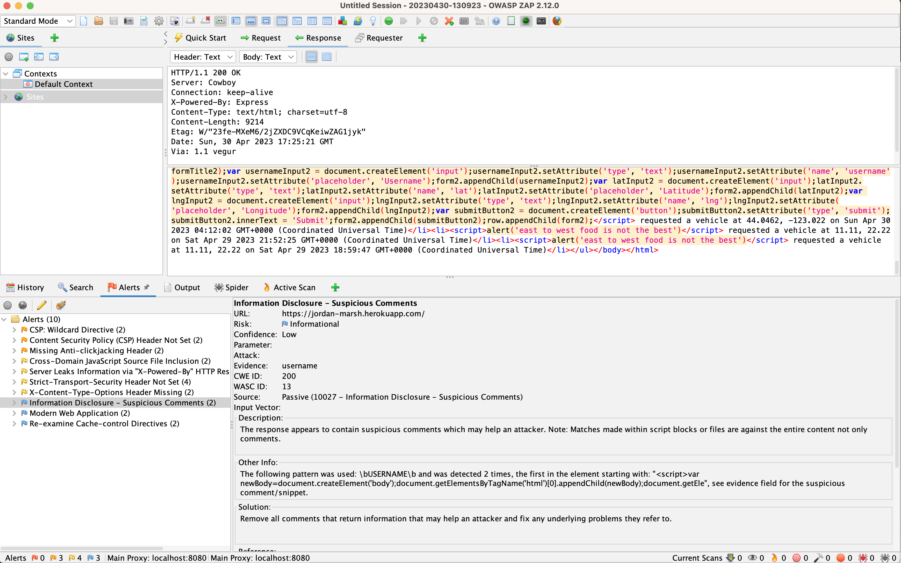

Introducing Not Uber, it is a web application connecting customers with drivers for rides. Customers can request rides and drivers can accept them. This application can track passenger location and driver location in real-time. I was hired as a security analyst to conduct a security assessment of this application to identify if there are any potential vulnerabilities.
To assess the security vulnerabilities of this web application I did manual testing and used automated tools like Burp Suite, curl and OWASP ZAP. The assessment conducts a vulnerability test of the web application, of its input validation, use of SQL injection, Cross-site scripting (XSS), and Cross-site request forgery (CSRF).
This web application Not Uber has several vulnerabilities in its security. These identified risks could be exploited to steal sensitive information, take control of the application and even compromise user accounts. The identified vulnerabilities include SQL injection, lack of input validation, XSS vulnerabilities and insecure transmission of data.
Location: app.get('/passenger.json') app.get(‘/vehicle.json’)
Severity: High.
Description: The Not Uber web application is prone to SQL injection attacks, since it does not validate user
input. Someone can use this form of attack to gain control of the database breaching privacy. The vulnerability
can be exploited by an attacker who can send a specially crafted SQL query to the application.
Proof of vulnerability:
theQuery = "SELECT * FROM passengers WHERE username = '" + usernameEntry + "'";
client.query(theQuery, (error, result) => {
if (!error) {
response.send(result.rows);
}
});Since, the query is string concatenation the user can exploit this by injecting SQL code in usernameEntry ‘ or 1=1
Resolution: To mitigate this vulnerability, the application should use parameterized queries to sanitize user input.
theQuery = "SELECT * FROM vehicles WHERE username = $1";
client.query(theQuery, [usernameEntry], (error, result) => {
if (!error) {
response.send(result.rows);
}
});Location: app.get('/passenger.json') app.get(‘/vehicle.json’)
Severity: Medium
Description: The Not Uber web application is also vulnerable to Cross-Site Scripting (XSS). A person can inject
a code into the application which would execute their script. This is a medium vulnerability because it can only
be exploited for specific requests.
Proof of vulnerability: The following can be used to exploit the XSS risk or SQL injection. We can enter username
parameter as (<script>alert("XSS")</script>)
Resolution: To mitigate this vulnerability, we would apply the same solution as the last vulnerability by creating a parameterized query for usernameEntry. Additionally, the application should validate user input and encode special characters that can be used for XSS attacks.
Location: app.post('/update') Severity: Medium Description: The /update and /rides endpoints transmit confidential data e.g. location in plain text, which can easily be accessed by attackers. Using the OWASP ZAP tool I was able to see data in plain text.
Proof of vulnerability: 
Resolution: To mitigate this vulnerability, the application should not give detailed information about the error and have authentication to restrict access.
In my findings, there were several security and privacy concerns on the Not Uber web application, that could be exploited to take control of the database or steal information. We have identified vulnerabilities like SQL injection, XSS and insecure data transmission.